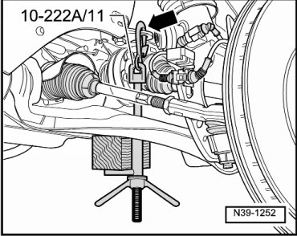
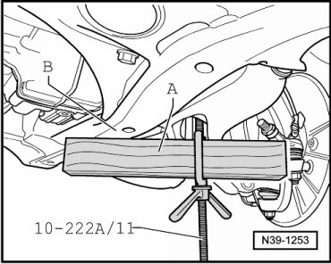
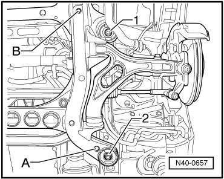

Subframe, Securing
Subframe, Securing
Special tools, testers and auxiliary items required
• Spindle (10 - 222 A /11) (Quantity: 2)
• Locating pins (T10300)
• Torque wrench (VAG 1331)
• Torque wrench (VAG 1332)
For certain procedures on the vehicle, the subframe or complete front axle must be removed. For installation, the original position of the subframe can be retained by using locating pins (T10300). If using locating pins, the bonded rubber bushings must have round hole for the bolts. For start of production, bonded rubber bushings with quadrangular hole were installed, subframes with this type of bushings cannot be secured. Always install locating pins (T10300) just prior to lowering the subframe or front axle. After completing repair work, a road test must be performed; if the steering wheel is crooked, a vehicle alignment must be performed. Refer to --> [ Wheel Alignment ] Wheel Alignment.
- Remove noise insulation below engine/transmission.
- Hook spindles (10 - 222 A /11) in eyelets - arrow - of engine carrier on left and right vehicle sides.

- Place a wood block - A - of approximately 300 mm in length in each bracket of the spindles (10 - 222 A /11).

Brackets must point backward, while doing this.
- Tighten wing nuts for the spindles, wood blocks - A - must be supported against subframe - B -.
- Remove bolts - 1 and 2 -.

- At these two points, thread in locating pins (T10300) up to marking - B - on the locating pins by hand.

- Tighten locating pins to 30 Nm, counter hold sleeve at flats using an open end wrench to prevent it from turning.
Position of subframe is now secured.
Removal of locating pins (T10300) is performed in the reverse order of installation.
Tightening Specifications